Advantages of Kubernetes?
+
It provides automatic scaling, self-healing, load balancing,
rolling updates, service discovery, and multi-cloud support. Kubernetes
enables highly available and scalable microservice deployments.
Bridge network is the default Docker network for
communication between containers on the same host.
Deploy multiple Microservices to Docker?
+
Use separate Dockerfiles and images for each microservice.
Use Docker Compose or Kubernetes for managing networking, scaling, and service
discovery among multiple containers.
Deploy multiple microservices to Docker?
+
Containerize each service separately and manage them with
Docker Compose or Kubernetes. Use service discovery and networking to allow
container-to-container communication.
Deploy multiple services across multiple host
machines?
+
Use Kubernetes, Docker Swarm, or cloud orchestration tools.
They handle load balancing, service discovery, networking, and scaling across
multiple hosts.
Deploy Spring Boot JAR to Docker?
+
Create a Dockerfile with a JDK base image and copy the JAR.
Expose the required port and run using ENTRYPOINT ["java","-jar","app.jar"].
Build and run using Docker commands.
Deploy Spring Boot Microservice to Docker?
+
Package the microservice as a JAR and create a Dockerfile
using a JDK base image. Copy the JAR file and expose the service port. Build
the Docker image and run the container using docker run -p
:
.
Deploy Spring Boot WAR to Docker?
+
Create a Dockerfile using a Tomcat base image and copy the
WAR file into the webapps folder. Build the Docker image using docker build -t
app . and run the container using docker run -p 8080:8080 app. This deploys
the WAR inside a Dockerized Tomcat environment.
DifBet ADD and COPY in Dockerfile?
+
COPY copies local files; ADD can copy local files remote
URLs and extract tar archives.
DifBet CMD and ENTRYPOINT in Dockerfile?
+
CMD sets default arguments for a container; ENTRYPOINT
configures the container to run as an executable.
DifBet Docker and virtual machines?
+
Docker containers share the host OS kernel and are
lightweight; VMs have their own OS and are heavier.
DifBet Docker bind mount and volume?
+
Bind mount maps host directories to containers; volumes are
managed by Docker for persistence and portability.
DifBet Docker Compose and Docker Swarm?
+
Docker Compose manages multi-container applications locally;
Docker Swarm is a container orchestration tool for clustering and scaling
containers.
DifBet Docker image and container?
+
An image is a blueprint; a container is a running instance
of that image.
DifBet Docker image layer and container
layer?
+
Image layers are read-only; container layer is read-write on
top of image layers.
DifBet Docker run and Docker service create?
+
Docker run creates a standalone container; service create
deploys containers as a Swarm service with scaling.
DifBet public and private Docker registries?
+
Public registry is accessible to everyone; private registry
restricts access to specific users or organizations.
DiffBet Kubernetes and Docker Swarm?
+
Docker Swarm is simpler and tightly integrates with Docker,
while Kubernetes is more powerful with advanced scheduling, auto-scaling, and
monitoring capabilities. Kubernetes is enterprise-grade, Swarm suits smaller
deployments.
Attach connects to container stdin/stdout; exec runs a
command in a running container.
Docker attach connects to a running container’s standard
input output and error streams.
Best practices include small images multi-stage builds
volume usage environment variables and secure secrets management.
ARG defines a variable that can be passed during build time.
Build cache stores image layers to speed up subsequent
builds.
Docker build creates an image from a Dockerfile.
Docker cache stores previously built layers to speed up
future builds.
Docker CLI is a command-line interface to manage Docker
images containers networks and volumes.
Docker commit creates a new image from a container’s current
state.
Docker compose down stops and removes containers networks
and volumes defined in a Compose file.
Docker compose logs shows logs from all services in the
Compose application.
Compose scale adjusts the number of container instances for
a service.
Docker compose up builds creates and starts containers
defined in a Compose file.
Docker Compose is a tool to define and run multi-container
Docker applications using a YAML file.
Docker Compose is a tool for defining and running
multi-container applications using a docker-compose.yml file. It automates
container creation, networking, and scaling using simple commands like docker
compose up.
Docker config stores non-sensitive configuration data for
containers in Swarm mode.
Docker container commit?
+
Container commit creates a new image from a running
container.
Docker container restart?
+
Container restart stops and starts a container.
A Docker container is a lightweight standalone executable
package that includes application code and all dependencies.
Context use switches the active Docker environment or
endpoint.
Docker context allows switching between multiple Docker
environments or endpoints.
Diff shows changes made to container filesystem since
creation.
Docker Engine is the core component of Docker that creates
and runs Docker containers.
Docker ENTRYPOINT vs CMD combination?
+
ENTRYPOINT defines executable; CMD provides default
arguments to ENTRYPOINT.
ENV sets environment variables inside a container at build
or run time.
Docker exec runs a command inside a running container.
EXPOSE documents the port on which the container listens.
Health check monitors container status and defines
conditions for healthy or unhealthy states.
Docker healthcheck command?
+
Healthcheck defines a command in Dockerfile to monitor
container status.
Docker Hub is a cloud-based registry to store and share
Docker images.
Image prune removes dangling (unused) images.
A Docker image is a read-only template used to create Docker
containers containing the application and its dependencies.
Inspect format uses Go templates to extract specific JSON
fields.
Docker inspect returns detailed JSON information about
containers images or networks.
Kill forces container termination; stop gracefully stops and
allows cleanup.
Docker layer is a filesystem layer created for each
Dockerfile instruction during image build.
Load imports an image from a tar file; import creates an
image from a filesystem archive.
Docker login authenticates a user with a Docker registry.
Docker logout removes saved credentials for a Docker
registry.
Logs -f streams container logs in real-time.
Docker logs display the standard output and error of a
running or stopped container.
Docker multi-stage build?
+
Multi-stage build reduces image size by using multiple FROM
statements in a Dockerfile for building and final image creation.
Docker network create creates a new Docker network.
Docker network inspect?
+
Docker network inspect shows detailed information about a
network and connected containers.
Docker network ls lists all networks on the Docker host.
Types include bridge host overlay macvlan and none.
Docker network allows containers to communicate with each
other or with external networks.
Docker node is a Swarm cluster member (manager or worker)
managed by Docker.
Docker overlay network in Swarm?
+
Overlay network allows services across multiple nodes to
communicate securely.
Docker ports vs EXPOSE?
+
EXPOSE only documents; ports (-p) maps container ports to
host.
Docker prune -a removes all stopped containers unused
networks images and optionally volumes.
Docker prune containers?
+
Prune containers removes stopped containers to free space.
Docker prune volume removes unused volumes.
Docker prune removes unused containers networks volumes or
images.
Docker ps -a lists all containers including stopped ones.
Docker ps lists running containers and their details.
Docker pull downloads a Docker image from a registry.
Docker push uploads a Docker image to a registry.
Docker registry stores Docker images; Docker Hub is a public
registry while private registries are also supported.
Replica is an instance of a service running in a Swarm
cluster.
Restart always ensures the container restarts automatically
if it stops.
Restart policy defines when a container should restart e.g.
always unless-stopped on-failure.
Docker rm removes a stopped container.
Docker rmi removes a Docker image from the local system.
Save exports an image as a tar file; export exports a
container filesystem.
Docker secret vs config?
+
Secret stores sensitive data; config stores non-sensitive
configuration data.
Docker secrets create adds a secret to the Swarm cluster.
Docker secrets inspect?
+
Docker secrets inspect shows details of a specific secret.
Docker secrets ls lists all secrets in the Swarm cluster.
Docker secrets securely store sensitive data like passwords
or API keys for use in containers.
Docker security includes using least privilege scanning
images securing secrets and isolating containers.
Docker service update updates a running service in a Swarm
cluster.
Docker service runs a container or group of containers
across a Swarm cluster with scaling and update capabilities.
Docker stack deploys a group of services defined in a
Compose file to a Swarm cluster.
Docker Stack is used in Docker Swarm to deploy and manage
multi-service applications defined in a Compose file. It supports scaling,
rolling updates, and distributed deployment across nodes.
Docker stats shows real-time resource usage (CPU memory
network) for containers.
Docker stop and Docker kill?
+
Docker stop gracefully stops a container; Docker kill forces
termination.
Docker swarm init initializes a Docker host as a Swarm
manager.
Docker swarm join adds a node to a Swarm cluster.
Docker Swarm is a native clustering and orchestration tool
for Docker allowing management of multiple Docker hosts.
Docker system df shows disk usage of images containers
volumes and build cache.
Docker tag assigns a new name or version to an image.
Top shows running processes; exec runs a new command in
container.
Docker top shows running processes inside a container.
USER sets the username or UID to run the container process.
Docker volume create creates a new persistent volume for
containers.
Docker volume ls lists all Docker volumes on the host.
A Docker volume is a persistent storage mechanism to store
data outside the container filesystem.
WORKDIR sets the working directory for container commands.
Docker is a platform that allows developers to build ship
and run applications in lightweight portable containers.
Docker is a containerization platform that packages
applications and dependencies into lightweight, portable containers. It
ensures consistent environments across development, testing, and production.
Docker improves deployment speed, scalability, and resource utilization.
A Dockerfile contains a set of instructions to build a
Docker image automatically. It defines the base image, application code,
dependencies, environment variables, and commands to run the app inside a
container.
A Dockerfile is a text file containing instructions to build
a Docker image.
Namespaces logically isolate clusters into multiple virtual
environments. They help manage resources, security policies, and team
separation in large applications.
Kubernetes is an open-source container orchestration system
for automating deployment, scaling, and management of containerized
applications across clusters.
A node is a physical or virtual machine in the Kubernetes
cluster that runs application workloads. It contains kubelet, container
runtime, and networking components.
Overlay network connects containers across multiple Docker
hosts in a Swarm cluster.
A pod is the smallest deployable unit containing one or more
containers sharing storage, networking, and lifecycle. Kubernetes schedules
and manages pods rather than individual containers.
Rolling update in Docker?
+
Rolling update updates service replicas gradually to avoid
downtime.
Scenarios where Java developers use Docker?
+
Docker is used for creating consistent dev environments,
Microservices deployment, CI/CD pipelines, testing distributed systems,
isolating services, and running different Java versions without conflicts.
® Docker is a open-source platform that allows you to build ,ship ,and run
applications inside containers.
· A container is a lightweight, standalone and portable environment that
include everything your application needs to run --> like code,
runtime, librraies and dependencies.
· With docker, developers can ensure their applications runs the same way
everywhere – whether on their laptop, a testing server or in the cloud.
· It solves the problem of “It works on my machine” ,
because containers carry all dependencies with them.
In Short
· Docker = Platform to create and manage containers.
· Container = Small, portable environment to run applications with all
dependencies.
In Docker, when we talk about policy, it usually refers to the restart
policies of containers.
These policies define what should happen to a container when it stops,
crashes, or when Docker itself restarts.
Types of restart Policy
1. No (default)
2. Always
3. On- failure
4. Unless- stopped
If container manual is off and always policy is set to on then container
will only start when "docker daemon restart"
Command-- >
docker container run –d –-restart always httpd
Always Policy
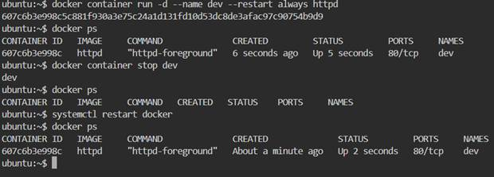
If a container is down due to an error and has an Unless-stopped policy,
it will only restart when you "restart docker daemon"
Command -- >
docker container run –d –-restart unless-stopped httpd
Unless-stopped policy

When a container shuts down due to an error and has a no-failure policy,
the container will restart itself.
Command -- >
Docker container run –d –-restart on-failure httpd
On –failure police
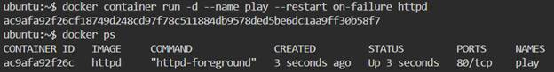
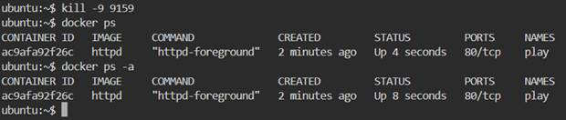
Max Retry in on-failure Policy (English)
+
When you use the on-failure restart policy in Docker, you can set a
maximum retry count.
· This tells Docker how many times it should try to restart a failed
container before giving up.
· If the container keeps failing and reaches the retry limit, Docker will
stop trying.
docker run -d --restart=on-failure:5 myapp
® Every Docker container has its own network namespace (like a
mini-computer).
® By default, services inside a container are not accessible from outside
the host machine.
® Port Mapping is the process of exposing a container’s internal port to
the host machine’s port so that external users can access it.
It uses the -p or --publish option:-
docker container run –d –p <host port>:<container port> httpd
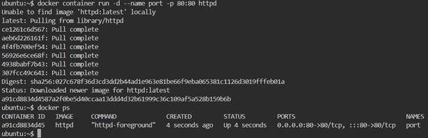
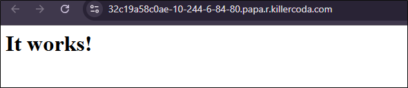
Docker networking is how containers communicate with each other, with the
host machine, and with the outside world (internet).
When Docker is installed, it creates some default networks. Containers can
be attached to these networks depending on how you want them to
communicate.
Default Docker Networks
1. bridge (default)
a. If you run a container without specifying a network, it connects to the
bridge network.
b. Containers on the same bridge network can communicate using IP
addresses.
c. You can also create your own user-defined bridge for name-based
communication.
2. host
a. Removes the isolation between the container and the host network.
b. Container uses the host’s network directly.
c. Example: If container exposes port 80, it will be directly available on
host port 80.
3. none
a. Completely isolates the container from all networks.
b. No internet, no container-to-container communication.
How Containers Communicate
· Container ↔ Container (same bridge network) → via
container name or IP.
· Container ↔ Host → via port mapping ( -p hostPort:containerPort ).
· Container ↔ Internet → via NAT (Network Address
Translation) on the host.
Command --> docker network ls
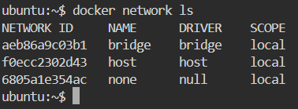
Create a network-- >
docker network create – -driver bridge network name
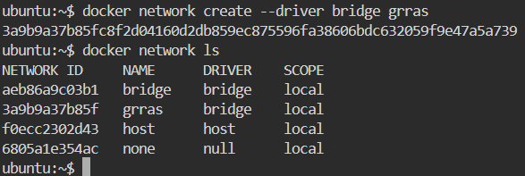
Docker network create – -driver bridge – -subnet 1G8.68.0.0/16 mynetwork
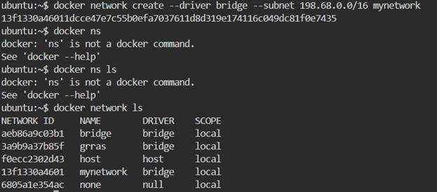
Craete a container in our custom network
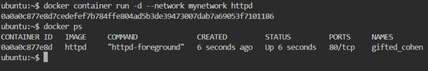
docker container inspect container name
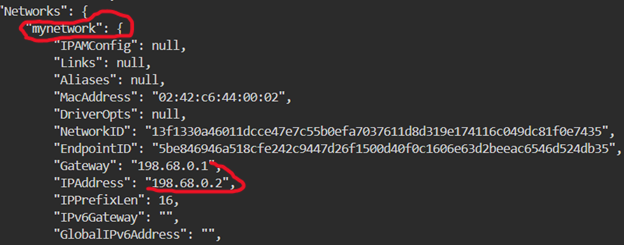
® By default, anything you save inside a container is temporary.
® If the container is deleted, all data inside it is lost.
® Volumes are Docker’s way to store data permanently
(persistent storage).
A Docker Volume is a storage location outside the container’s
filesystem but managed by Docker.
This way, data remains safe even if the container is removed or recreated.
Why Use Volumes?
1. Data Persistence → Data won’t be lost if the container is
deleted.
2. Sharing Data → Multiple containers can share the same
volume.
3. Performance → Better than bind mounts for production
workloads.
Types of volume:-
1 Bind volume
2 Local Mount/ Volume mount
Bind Mount:-
® A Bind Mount directly connects a host machine’s directory/file to a
container’s directory.
® This means whatever changes you make inside the container will reflect
on the host, and vice versa.
® It’s different from a Volume because:
® Volumes are managed by Docker (stored in
/var/lib/assets/img/docker/volumes/... )
® Bind mounts are managed by you (stored anywhere on your host).
Command :-
docker container run –d –p 80:80 –v
/directory_name:/usr/local/apache2/htdocs
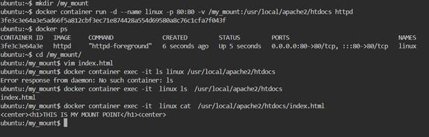
Local mount Create a Volume
+
Command:-
docker volume create my- vol
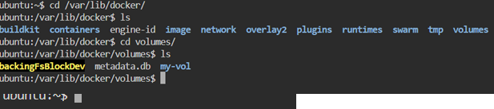
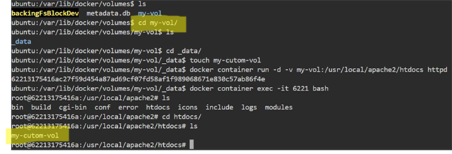
® A Docker Image is a blueprint (template) used to create Docker
containers.
® It contains:
® Application code
® Dependencies (libraries, packages)
® Configuration files
® Environment settings
® You can think of an image like a snapshot or read-only template.
® When you run an image → it becomes a container.
Docker pull nginx
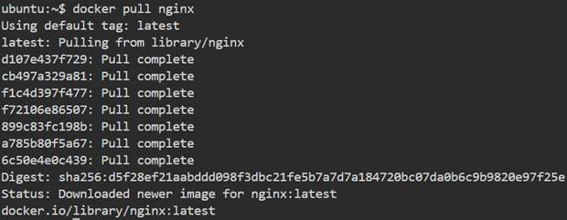
Types of Image Creation
1 Commit Method
2 Dockerfile Method
Commit mehtod:-
® The docker commit command is used to create a new image from an existing
container.
® This is helpful when you:
® Run a container
® Make changes inside it (install packages, edit files, configure apps)
® Then save those changes as a new Docker Image.
Push the Image on your DockerHub Command :-
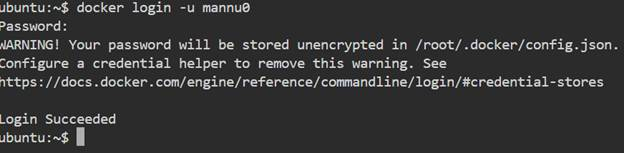 docker
login –u username(dockerHub username)
Create a Image for Docker Commit Method Commands
:-
+
Vim index.html
--> this is my commit method
· Docker container run –d – name web httpd
· Docker container cp index.html web:/usr/local/apache2/htdocs
· Docker container commit –a “grras” web team:latest( team=image name )
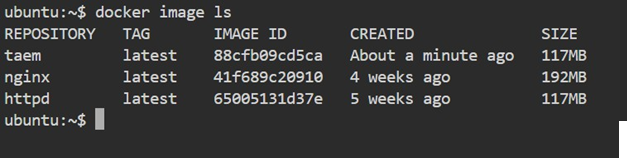
Create a new container from custom image and hit the IP on browser and
show the contant
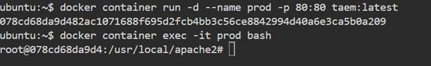
Push the Image on DockerHub Command :-
docker image tag team:latest username/team
docker image push username/team:latest
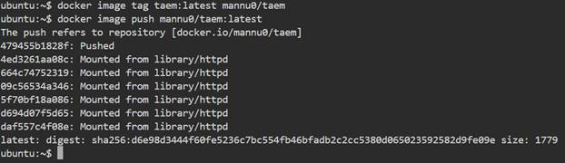
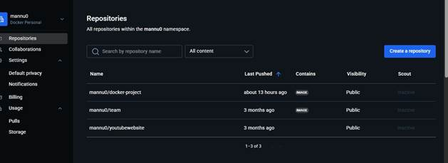
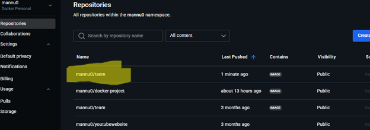
® A Dockerfile is a text file that contains a set of instructions to build
a Docker Image.
® Instead of making changes in a container and committing (using docker
commit ), we write instructions
in a Dockerfile → so the image can be
built automatically and repeatedly.
® It ensures consistency (same image every time you build).
Common Instructions in Dockerfile:
· FROM → Base image (e.g., ubuntu, alpine,
nginx)
· RUN → Run commands (install packages)
· COPY → Copy files from host to image
· WORKDIR → Set working directory
· CMD → Default command to run when
container starts
· EXPOSE → Inform which port container
will use
mkdir docker
cd docker
Vim index.html
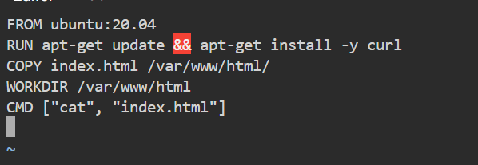
Docker image build . tag web Docker container run –d web:test
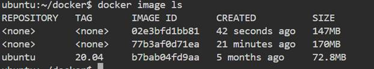